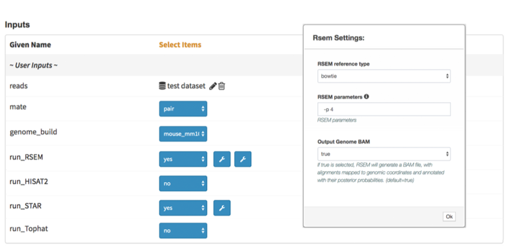

Short Overview¶
What is DolphinNext?¶
DolphinNext is an intuitive web interface designed to simplify pipeline design, development and maintenance which allows to analyze and manage large numbers of samples on High Performance Computing (HPC) environments, cloud services or on a personal workstations. It automatically builds Nextflow, pipelines by assembling components such as process or modules.
Benefits of the design¶
- Build: Easily create new pipelines using a drag and drop interface. No need to write commands from scratch, instead reuse existing processes/modules to create new pipelines. Pipelines can be exported as NextFlow files or readily run within DolphinNext.
- Run: Execute pipelines in any host environment with different executors such as SGE, LSF, SLURM, Ignite etc. Seamless Amazon/Google Cloud integration to create a cluster in the cloud, execute the pipeline and transfer the results to the cloud storage service (Amazon Storage, S3 or Google Storage, GS).
- Resume: A continuous checkpoint mechanism keeps track of each step of the running pipeline. Partially completed pipelines can be resumed at any stage even after parameter changes.
- Analyze: Report section provides execution summary of each step and selected outputs which allows you to analyze your data with interactive plots and custom R-Markdown reports.
- Improve: Revisioning system keeps track of pipelines and processes versions as well as their parameters. Edit, improve shared pipelines and customize them according to your needs.
- Share: Share pipelines across different platforms. Isolate pipeline-specific dependencies in a container and easily replicate the methods in other clusters.
What is Nextflow?¶
Nextflow, is an awesome framework based on the dataflow programming model used for building parallelized, scalable and reproducible workflows using software containers. It provides an abstraction layer between the execution and the logic of the pipeline, which means that the same pipeline code can be executed on multiple platforms.
Who is DolphinNext for?¶
DolphinNext is designed for a wide variety of users, from bench biologists to expert bioinformaticians.
- Executing pipelines requires no programming knowledge and our aim is to create comprehensive explaninations to direct users before executing their pipeline. After run completes, we provide overall execution summary of each step which gathers all of the samples in simple tables or interactive plots for ultimate comparison.
- Building pipelines requires basic scripting knowledge, and familiarization with nextflow to be effectively use its operators. You don’t need to learn all of the nextflow syntax, instead you can easily focus on the processes where basic input and output nodes are defined. The rest is handled by Dolphinnext (e.g. creating and linking the channels, etc.)
Why not just write a Nextflow pipeline?¶
In many cases, building a static nextflow pipeline is sufficient for our goals. However, it is hard to maintain the process and module revisions in simple text editors. By the help of DolphinNext user interface, you can easily track the evolution of each process and module by clicking their previous revisions. And when it comes to upgrading existing pipelines, it’s much easy to update each process since all of the process related scripts are isolated in process circle and you don’t need to deal with other parameters or channel operations which are defined in the other part of the nextflow script. This modular structure gives us more flexibility and dynamism to create very complex pipelines with little effort.
Moreover, we have a built-in form creator which dynamically updates the run page according to defined parameters in the process. This tool become so powerfull when it comes to creating complex pipelines which has hundreds of optional parameters. As seen at the figure below, you can easily isolate the process related parameters in their process specific windows.
{kind=link}
Finally, please check the short summary of Nextflow and DolphinNext features which briefly explains focus of the DolphinNext.

Public Pipelines¶
Here is the short summary of existing public pipelines which are ready to execute in your environment.
- RNA-Seq Pipelines (RSEM, HISAT, STAR, Tophat2)
- ATAC-Seq Pipeline
- ChIP Seq Pipeline
- Single Cell Pipelines (10X Genomics, Indrop)
- piRNA Pipelines (piPipes ChIP-Seq, Degradome/RAGE/CAGE, smallRNA)
- Sub Modules:
- Trimmer
- Adapter Removal
- Quality Filtering
- Common RNA Filtering
- ESAT
- FastQC,
- MultiQC
- RSeQC
- Picard
- IGV and UCSC genome browser file conversion